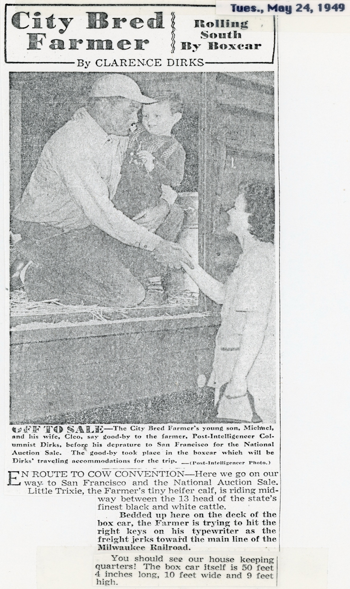
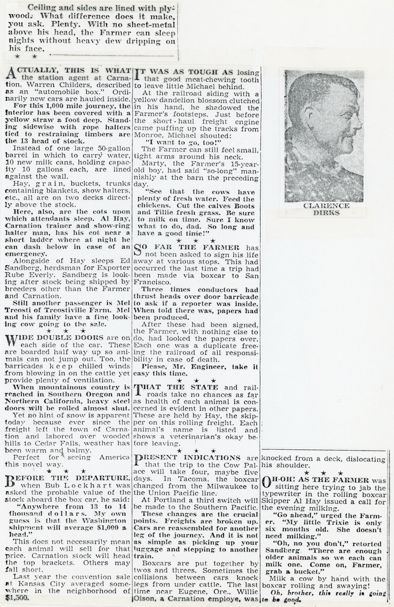
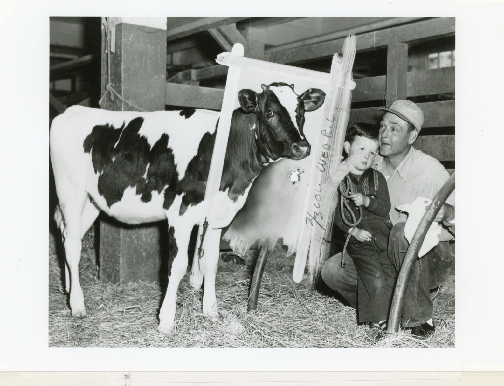
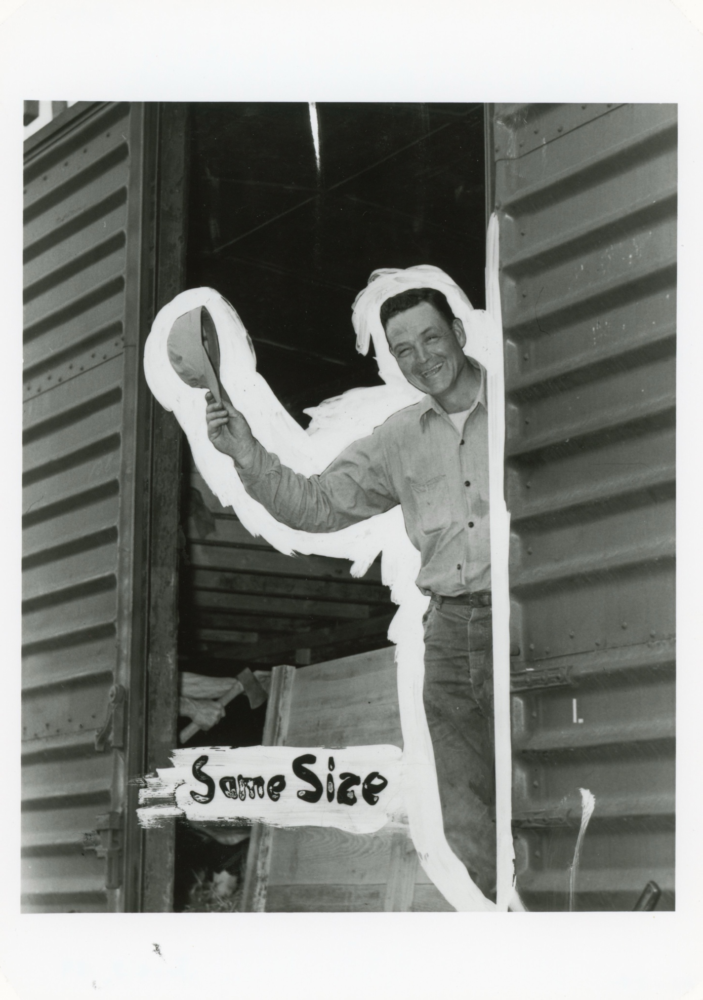

The Farmer assures son Michael that he will return soon from his trip with to San Francisco with Trixie.

City Bred Farmer Clarence Dirks waves one last goodbye before departing in a boxcar to the National Auction Sale in San Francisco with his heifer calf Trixie and a dozen other of the state’s finest black and white cattle.